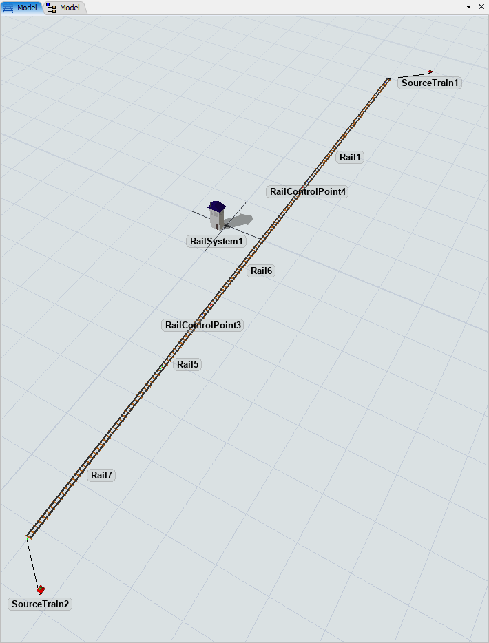
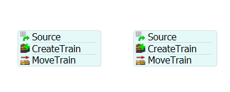
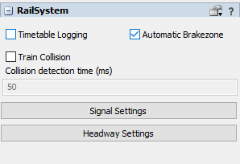
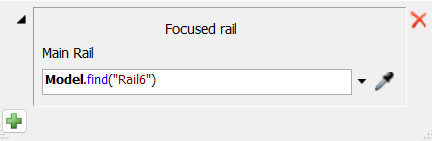
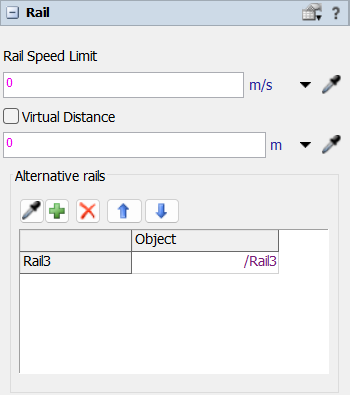
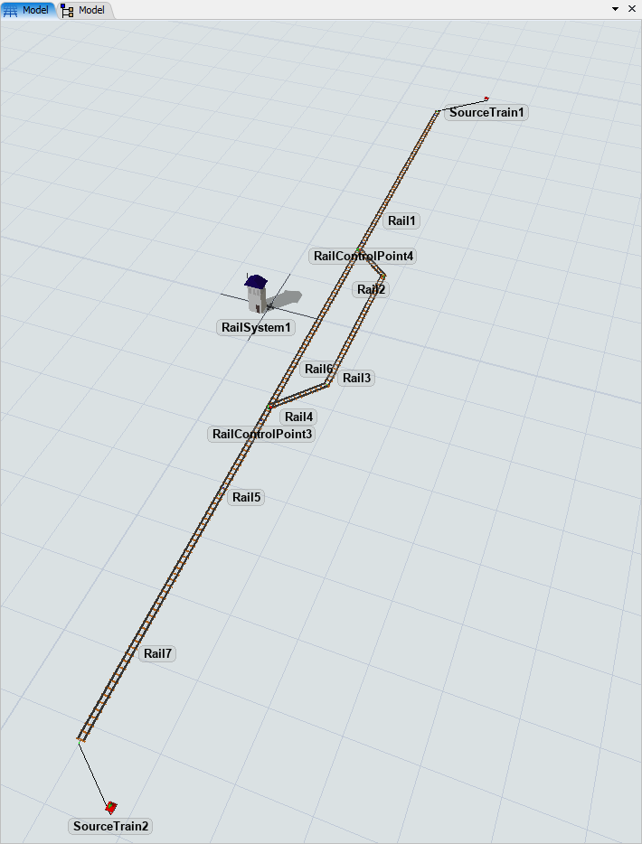

Exercise Information
Two trains travel on a single track, on opposite directions. The track has a single lane and
the two trains destination is on the other side of the track. Automatic train brakes are activated,
add alternative routes triggers to avoid deadlocks.
Step 1 Track Layout
To create the track layout, follow the steps below:
- Drag 5 Rail objects to the model and connect them on a straight line.
- Create 2 source trains and connect them to opposite ends of the track.
- Create 2 RailControlPoints at each end of the track.
Your model should be looking like this:

Step 2 Processflow Configuration
In order to achieve the solution for the problem, you should create the
following objects:
- Create two Schedule Sources, configure them to release 1 train at time 0.
- Create two CreateTrain, set one for each Source Train.
- Create two MoveTrains, set one for each Train.
- Configure the MoveTrains to have the RailControlPoints as destination, on opposite sides.
Your Processflow should be looking like this:

Step 3 Deadlocks & Alternative Paths
The first step to activate the automatic brakezone system is to drag any RailWorks object to model and
create a RailSystem.
To access the brakezone settings, follow the steps:
- Drag one Rail to the model.
- Access the RailSystem properties and mark the "Automatic Brakezone" checkbox.
- With these steps, automatic brakes system is now activated.
- Run the model and identify the exact point where the trains enter a deadlock.

Step 4 Alternative Routes
In order to avoid the deadlock, do the following modification.
- Create a detour on the deadlock Rail, using 3 Rails.
- Connect them to create an alternative route to avoid traffic.
- Add two more RailControlPoints to the tip of the rails before the detour starts.
- Create an onPass trigger on both RailControlPoints.
- Use the picklist to choose "Railworks/Define Alternative Routes".
- Select the deadlocked rail on the mainRail field in the trigger configuration.
- Now click on the deadlocked rail and in the alternative rail field, use the dropper to select
the paralel alternative rail you build on the detour.
The configuration of the alternative routes on the RailControlPoint e deadlocked Rail should look like this:


Your model should be looking like this:
